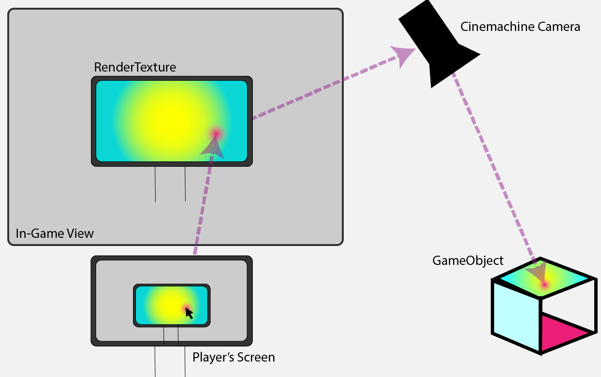

My Contributions to Breach of Space
Programming
Breach of Space has gone through many forms on its way to being a stealth game. For the very first iteration, Breach of Space was a procedurally generated multi-user dungeon crawler. I implemented code that would produce a randomized dungeon of prefab rooms linking up at their doors. I also learned the coding basics of putting our game online for multiplayer. Starting in this version and continuing throughout, I have been in charge of our repositories (including our recent integration of Git LFS), prototyping, and much of the in-engine implementation (shaders, UI, prefabs, animations).
In its next iteration, Breach of Space was a management simulator with a unique viewpoint: a console of monitors in an office at the habitat. I began work on a system for controlling multiple robot workers and various objects from the screen-in-a-screen setup of this iteration. This system linked into our in-game shop and would eventually be involved in your interactions with your boss. I also created the typing minigame that mimics the robot workers’ typing on malfunctioning equipment, as well as a mock-instant messenger app to communicate with the robots and your superiors.

For the pre-merge iteration, I worked on refining the scripts relating to camera & robot movements, changing perspectives and shifting to a more isometric overhead view. I created revamped prefabs of my previous robot worker versions, as well as a more modular interactables script. With the exception of some resource management scripting, much of this version was refining what had already been done in the previous iteration. This was done with our playtesting feedback in mind, allowing for better UX through the addition of player feedback elements (progress bars) and more intuitive controls (camera / robot view changing scripts). Though it was never implemented fully, I also programmed a system to allow for objects to be powered on and off depending on the number of resources available, allowing for more player choice in the game world. Finally, I added a shader to replace the older version, allowing not only for outline but for color fill and other effects to be called through code

As our team merged with another, we spent much of this iteration implementing their code and less on the older scripts. Much of what I did for this version of Breach of Space (up to this point) relates to FMOD integration of sound effects and music, in addition to directing, animating, and programming our first teaser trailer. In the future, I hope to add some utility AI, goal-oriented action planning, and/or behavior trees to Breach of Space now that we have non-playable enemy characters in the game.
Music
While the majority of my audio work happened during this past iteration, I have always had aural feedback and immersion in the back of my mind when programming Breach of Space. I worked with using usfxr, an in-engine synthesizer used to create basic sound effects without using as much space. I composed our first track (“Bachman-Turing Overtime”) to reflect both the chaotic nature of that iteration’s demo level and its two-minute time limit.
For the latest iterations I composed another track (“Greetings from

This second major track was also edited down to fit in our teaser trailer (mentioned above). I also edited and mastered lines of external voiceover work to place over the track for the trailer using Adobe Audition.
Christopher Butcher 2021